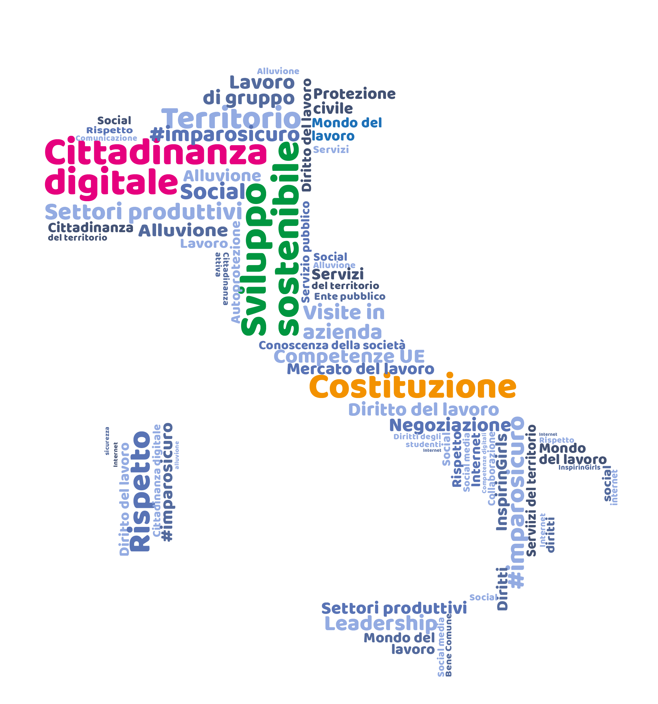

Temi trattati durante l'anno
Cos'è educazione civica?
È un insegnamento introdotto con la legge n.92 del 20 agosto 2019 che ha l'obiettivo di “Formare cittadini responsabili e attivi promuovendo la partecipazione piena e consapevole alla vita civica, culturale e sociale delle comunità, nel rispetto delle regole, dei diritti e dei doveri”.
Promuove sia aspetti di conoscenze civiche sia azioni educative collegati alla cittadinanza responsabile e attiva; infatti, alle competenze e alle molteplici “educazioni” che essa promuove, la Legge indica una serie di temi conoscitivi:
- Costituzione italiana
- Istituzioni dell’Unione europea e organismi internazionali, bandiera e l’inno nazionale
- statuti delle regioni ad autonomia ordinaria e speciale etc..
cosa abbiamo fatto?
Durante tutto l'anno scolastico abbiamo svolto molte attività, che sono:
- Trimestre
- Costituzione italiana e Statuto Albertino
- Sistemi elettorali
The American System
- The American Constitution
- Congress
- USA elections
- Video "L'America al televoto"
- Les institutions et le système électoral français
- Zola et "J'accuse"
- Pentamestre
- Incontro con Barbero
Sport e diritti civili
- Film "Race"
- Persone transgender nello sport
Union Européenne
- Les institutions européennes
- L'histoire de l'UE
- The comparison between the American system and the UK system
- Organizzazioni internazionali che tutelano l'ambiente
In questo sito web, riassumerò alcune delle attività fatte quest'anno.